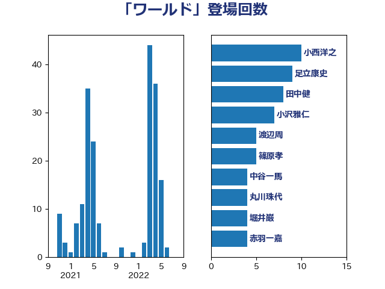

単語「ワールド」

| 小西洋之 | 立憲民主党 | 10 回 |
| 足立康史 | 日本維新の会 | 9 回 |
| 田中健 | 国民民主党 | 8 回 |
| 小沢雅仁 | 立憲民主党 | 7 回 |
| 渡辺周 | 立憲民主党 | 5 回 |
| 篠原孝 | 立憲民主党 | 5 回 |
| 中谷一馬 | 立憲民主党 | 4 回 |
| 丸川珠代 | 自由民主党 | 4 回 |
| 堀井巌 | 自由民主党 | 4 回 |
| 赤羽一嘉 | 公明党 | 4 回 |
| 大塚耕平 | 国民民主党 | 3 回 |
| 小泉進次郎 | 自由民主党 | 3 回 |
| 池下卓 | 日本維新の会 | 3 回 |
| 自見はなこ | 自由民主党 | 3 回 |
| 吉田統彦 | 立憲民主党 | 2 回 |
| 宮本徹 | 日本共産党 | 2 回 |
| 深澤陽一 | 自由民主党 | 2 回 |
| 片山さつき | 自由民主党 | 2 回 |
| 石川大我 | 立憲民主党 | 2 回 |
| 蓮舫 | 立憲民主党 | 2 回 |
| 遠藤利明 | 自由民主党 | 2 回 |
| 鈴木庸介 | 立憲民主党 | 2 回 |
| ながえ孝子 | 無所属 | 1 回 |
| 三浦信祐 | 公明党 | 1 回 |
| 串田誠一 | 日本維新の会 | 1 回 |
| 伊藤孝恵 | 国民民主党 | 1 回 |
| 佐々木さやか | 公明党 | 1 回 |
| 倉林明子 | 日本共産党 | 1 回 |
| 古屋範子 | 公明党 | 1 回 |
| 古賀之士 | 立憲民主党 | 1 回 |
| 宮崎政久 | 自由民主党 | 1 回 |
| 寺田静 | 無所属 | 1 回 |
| 小野田紀美 | 自由民主党 | 1 回 |
| 山下芳生 | 日本共産党 | 1 回 |
| 山崎正恭 | 公明党 | 1 回 |
| 岸信夫 | 自由民主党 | 1 回 |
| 川田龍平 | 立憲民主党 | 1 回 |
| 後藤茂之 | 自由民主党 | 1 回 |
| 本田顕子 | 自由民主党 | 1 回 |
| 杉尾秀哉 | 立憲民主党 | 1 回 |
| 杉本和巳 | 日本維新の会 | 1 回 |
| 東徹 | 日本維新の会 | 1 回 |
| 榛葉賀津也 | 国民民主党 | 1 回 |
| 池田佳隆 | 自由民主党 | 1 回 |
| 石井章 | 日本維新の会 | 1 回 |
| 石垣のりこ | 立憲民主党 | 1 回 |
| 福島みずほ | 社会民主党 | 1 回 |
| 稲富修二 | 立憲民主党 | 1 回 |
| 舩後靖彦 | れいわ新選組 | 1 回 |
| 若宮健嗣 | 自由民主党 | 1 回 |
| 茂木敏充 | 自由民主党 | 1 回 |
| 藤川政人 | 自由民主党 | 1 回 |
| 辻元清美 | 立憲民主党 | 1 回 |
| 道下大樹 | 立憲民主党 | 1 回 |
| 金子俊平 | 自由民主党 | 1 回 |
| 鈴木宗男 | 日本維新の会 | 1 回 |
| 長妻昭 | 立憲民主党 | 1 回 |
| 音喜多駿 | 日本維新の会 | 1 回 |